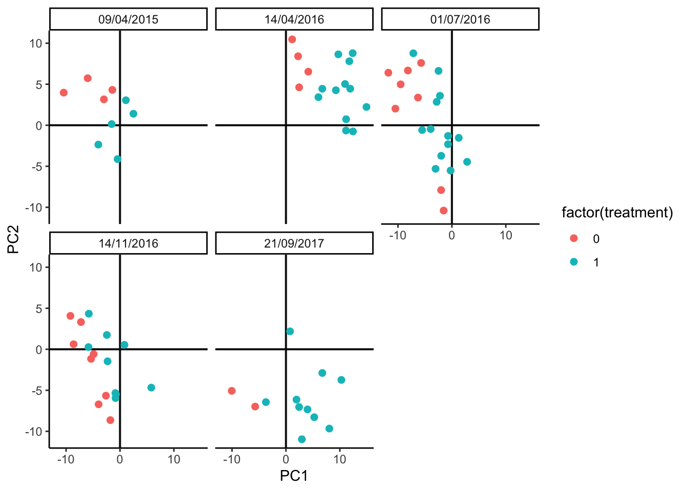

Chapter 5 Batch Effect Correction
Integration can be a subtle exercise. We need to balance our interest in seeing
similarities between datasets with the risk of making things seem more similar
than they really are. Simulation can help navigate this subtlety by letting us
see how integration methods would behave in situations where we know exactly how
the different datasets are related. This note will illustrate this perspective
by showing how simulation can help with both horizontal (across batches) and
vertical (across assays) integration. We’ll have a brief interlude on the map
function in the purrr, which is helpful for concisely writing code that would
otherwise need for loops (e.g., over batches or assays).
5.1 Anaerobic Digestion Data
This example is about simultaneously analyzing several batches in a dataset about the efficiency of anaerobic digestion (AD) of organic matter. The essential problem is that, in this study, the samples could not be collected simultaneously. Small differences across separate runs could lead to systematic differences in the resulting data, which can obfuscate the more interesting between-group variation that the experiment was intended to uncover. For example, in the AD dataset, the date of the sequencing run has a global effect on measured community composition, which we can see right away from a principal components plot:
data(anaerobic)
pca_batch(anaerobic, facet = FALSE) +
scale_color_manual(values = c("#191C59", "#bc0c3c")) +
labs(
col = "Treatment",
shape = "Batch",
x = "PC1 [25.2% Variance Explained]",
y = "PC2 [16.2% Varianced Explained]"
)
You can learn more about the general microbiome batch effect integration problem in (Wang and Le Cao, 2020), which is where this dataset example and the batch effect correction code below comes from. The article also reviews mechanisms that could lead to batch effects in microbiome data, together with methods for removing these effects and the situations within which they are most appropriate.
In batch effect correction, it’s important to remove as much of the batch variation as possible without accidentally also removing the real biological variation that would have been present even if all the samples had been sequenced together. This is sometimes called ``overintegration,’’ and this is an especially high risk if some of the real biological variation is quite subtle, e.g., a rare cell type or one that is very similar to a more prominent one. Simulation can help us gauge the extent to which different methods may or may not overintegrate. Since we get to control the between-batch and and between-biological-condition differences, we can see the extent to which integration methods can remove the former while preserving the latter.
5.2 Simulation Design
The block below estimates a candidate simulator. By using the formula ~ batch + treatment, we’re allowing for taxon-wise differences due to batch and
treatment. Note that in principle, we could estimate an interaction between
batch and treatment (the treatment could appear stronger in some batches than
others). I encourage you to try estimating that model; however, visually
analyzing the output suggests that this full model has a tendancy to overfit.
Since the data have already been centered log-ratio transformed, we can try out
a Gaussian marginal model. The AD dataset has relatively few samples
compared to the number of features, so we’ll use a copula that’s designed for
this setting.
simulator <- setup_simulator(
anaerobic,
~ batch + treatment,
~ GaussianLSS(),
copula = copula_adaptive(thr = .1)
) |>
estimate(nu = 0.05, mstop = 100) # lower nu -> stable trainingWe can simulate from the fitted model and evaluate the quality of our fit using
contrast_boxplot. This is a light wrapper of the ggplot2 code we used to
compare experiments from our first session, and you can read its definition
here.

Exercise Propose and create at least one other visualization that can be used to compare and contrast the simulator with real data. What conclusions can you draw?
Solution: There are many possible answers:
- Boxplots across taxa with different overall abundance levels.
- Analogous histograms or CDF plots, to show the entire distributions, rather than just summarized quantiles.
- Pair scatterplots, to see how well the bivariate relationships between taxa are preserved.
- Dimensionality reduction on the simulated data, to see how well it matches global structure in the original data.
We’ll implement the last idea using PCA. This should be contrasted with the PCA plot on the original data above. It’s okay if the plot seems rotated relative to the oiginal plot – PCA is only unique up to rotation. The main characteristic we’re looking for is that the relative sizes of the batch and treatment effects seem reasonaly well-preserved, since these will be the types of effects that our later batch effect integration methods must be able to distinguish.

In addition to visual evaluation, we can also perform a narrow evaluation using the parameter estimations from RUV. The idea here is that the parameter estimation from RUV should be similar for simulation data and real data. In the RUV model, we estimate the treatment effect for each feature in simulation and real data sets and are plotted in the scatter plot along with the correlation value between the two. As seen in the figure there is good agreement with the parameter estimations from the two datasets with a correlation value of 0.66.
fit_sim <- ruv::RUV4(t(assay(anaerobic_sim)), colData(anaerobic_sim)$treatment, k = 0)
fit_org <- ruv::RUV4(t(assay(anaerobic)), colData(anaerobic)$treatment, k = 0)
bind_cols(org = c(fit_org$betahat), sim = c(fit_sim$betahat)) |>
ggplot(aes(org, sim)) +
geom_abline(color = "blue", lwd = 1.5, lty = 2) +
geom_point(size = 2, shape = 16) +
theme_classic() +
ylab("Estimated beta values from simulated data") +
xlab("Estimated beta values from real data") +
stat_cor(method = "pearson", label.x = -1.4, label.y = 0.7) :::
:::
To study the risk for overintegration, let’s imagine that there were a third
treatment group with relatively fewer samples. This is the type of group that a
correction method might accidentally blend in with the rest, if it’s too
aggressive. We’ve defined the imaginary experiment using the data.frame below.
The treatment level 1.8 is the new one. We’ve supposed there are between 1 -
3 technical replicates (extraction) for each biological sample (sample), and
the batch dates are the same as before.
## extraction batch treatment rep
## Min. :1 09/04/2015:36 Min. :0.0000 Min. :1.00
## 1st Qu.:1 14/04/2016:36 1st Qu.:0.0000 1st Qu.:1.75
## Median :2 01/07/2016:36 Median :1.0000 Median :2.50
## Mean :2 14/11/2016:36 Mean :0.7167 Mean :2.75
## 3rd Qu.:3 21/09/2017:36 3rd Qu.:1.0000 3rd Qu.:4.00
## Max. :3 Max. :1.8000 Max. :5.00
##
## sample
## 1 : 2
## 2 : 2
## 3 : 2
## 4 : 2
## 5 : 2
## 6 : 2
## (Other):168We can simulate from the new design and look at how different this new treatment group seems from the others. It’s a subtle effect, definitely smaller than the batch effect, but also separate enough that we should be able to preserve it.
5.3 Benchmarking
We’ve defined a batch_correct wrapper function that implements either the
RUV-III or ComBat batch effect correction methods. Their outputs are contrasted
in the PCAs below. It looks like ComBat might be somewhat too aggressive,
causing the 1 and 1.8 treatment groups to substantially overlap, while RUV
is a bit more conservative, keeping the treatment groups nicely separate. As an
aside, we note that this conclusion can depend on the number of replicates and
total number of samples available. We’ve included the code for generating the
imaginary_design data.frame in a vignette
for the MIGsim package. Can you find settings that lead either method astray?
p[["ruv"]] <- pca_batch(batch_correct(anaerobic_sim, "ruv"))
p[["combat"]] <- pca_batch(batch_correct(anaerobic_sim, "combat"))
prediction_errors <- function(df) {
y_hat <- predict(lda(treatment ~ PC1 + PC2, data = df), type = "response")$class
table(df$treatment, y_hat)
}
map(p, ~ prediction_errors(.$data))## $sim
## y_hat
## 0 1 1.8
## 0 62 13 0
## 1 15 56 4
## 1.8 1 14 15
##
## $ruv
## y_hat
## 0 1 1.8
## 0 70 5 0
## 1 2 67 6
## 1.8 0 8 22
##
## $combat
## y_hat
## 0 1 1.8
## 0 65 10 0
## 1 12 59 4
## 1.8 1 12 17## R version 4.3.2 (2023-10-31)
## Platform: aarch64-apple-darwin20 (64-bit)
## Running under: macOS Sonoma 14.5
##
## Matrix products: default
## BLAS: /System/Library/Frameworks/Accelerate.framework/Versions/A/Frameworks/vecLib.framework/Versions/A/libBLAS.dylib
## LAPACK: /Library/Frameworks/R.framework/Versions/4.3-arm64/Resources/lib/libRlapack.dylib; LAPACK version 3.11.0
##
## locale:
## [1] en_US.UTF-8/en_US.UTF-8/en_US.UTF-8/C/en_US.UTF-8/en_US.UTF-8
##
## time zone: Australia/Melbourne
## tzcode source: internal
##
## attached base packages:
## [1] splines parallel stats4 stats graphics grDevices
## [7] utils datasets methods base
##
## other attached packages:
## [1] doRNG_1.8.6
## [2] rngtools_1.5.2
## [3] foreach_1.5.2
## [4] ggpubr_0.6.0
## [5] ggrepel_0.9.5
## [6] edgeR_4.0.16
## [7] limma_3.58.1
## [8] ANCOMBC_2.4.0
## [9] stringr_1.5.1
## [10] ks_1.14.2
## [11] tidySummarizedExperiment_1.12.0
## [12] ttservice_0.4.1
## [13] SimBench_0.99.1
## [14] wesanderson_0.3.7
## [15] mia_1.10.0
## [16] MultiAssayExperiment_1.28.0
## [17] TreeSummarizedExperiment_2.10.0
## [18] Biostrings_2.70.3
## [19] XVector_0.42.0
## [20] SingleCellExperiment_1.24.0
## [21] gamlss_5.4-22
## [22] nlme_3.1-165
## [23] gamlss.dist_6.1-1
## [24] gamlss.data_6.0-6
## [25] scDesigner_0.0.0.9000
## [26] purrr_1.0.2
## [27] MIGsim_0.0.0.9000
## [28] tidyr_1.3.1
## [29] tibble_3.2.1
## [30] scico_1.5.0
## [31] pwr_1.3-0
## [32] patchwork_1.2.0
## [33] mutoss_0.1-13
## [34] mvtnorm_1.2-5
## [35] mixOmics_6.26.0
## [36] lattice_0.22-6
## [37] MASS_7.3-60.0.1
## [38] glue_1.7.0
## [39] ggplot2_3.5.1
## [40] ggdist_3.3.2
## [41] gamboostLSS_2.0-7
## [42] mboost_2.9-10
## [43] stabs_0.6-4
## [44] forcats_1.0.0
## [45] dplyr_1.1.4
## [46] SummarizedExperiment_1.32.0
## [47] Biobase_2.62.0
## [48] GenomicRanges_1.54.1
## [49] GenomeInfoDb_1.38.8
## [50] IRanges_2.36.0
## [51] S4Vectors_0.40.2
## [52] BiocGenerics_0.48.1
## [53] MatrixGenerics_1.14.0
## [54] matrixStats_1.3.0
## [55] SpiecEasi_1.1.3
## [56] CovTools_0.5.4
##
## loaded via a namespace (and not attached):
## [1] igraph_2.0.3 ica_1.0-3
## [3] plotly_4.10.4 Formula_1.2-5
## [5] scater_1.30.1 zlibbioc_1.48.2
## [7] tidyselect_1.2.1 bit_4.0.5
## [9] doParallel_1.0.17 pspline_1.0-20
## [11] blob_1.2.4 S4Arrays_1.2.1
## [13] png_0.1-8 plotrix_3.8-4
## [15] cli_3.6.3 CVXR_1.0-14
## [17] pulsar_0.3.11 arrayhelpers_1.1-0
## [19] multtest_2.58.0 goftest_1.2-3
## [21] textshaping_0.4.0 bluster_1.12.0
## [23] BiocNeighbors_1.20.2 uwot_0.2.2
## [25] mime_0.12 evaluate_0.24.0
## [27] tidytree_0.4.6 leiden_0.4.3.1
## [29] stringi_1.8.4 backports_1.5.0
## [31] XML_3.99-0.17 lmerTest_3.1-3
## [33] gsl_2.1-8 Exact_3.2
## [35] httpuv_1.6.15 AnnotationDbi_1.64.1
## [37] magrittr_2.0.3 mclust_6.1.1
## [39] ADGofTest_0.3 pcaPP_2.0-4
## [41] sctransform_0.4.1 rootSolve_1.8.2.4
## [43] ggbeeswarm_0.7.2 DBI_1.2.3
## [45] genefilter_1.84.0 jquerylib_0.1.4
## [47] withr_3.0.0 corpcor_1.6.10
## [49] systemfonts_1.1.0 class_7.3-22
## [51] lmtest_0.9-40 sva_3.50.0
## [53] compositions_2.0-8 htmlwidgets_1.6.4
## [55] fs_1.6.4 labeling_0.4.3
## [57] SparseArray_1.2.4 DEoptimR_1.1-3
## [59] DESeq2_1.42.1 cellranger_1.1.0
## [61] tidybayes_3.0.6 extrafont_0.19
## [63] annotate_1.80.0 flare_1.7.0.1
## [65] lmom_3.0 reticulate_1.37.0
## [67] minpack.lm_1.2-4 geigen_2.3
## [69] zoo_1.8-12 knitr_1.48
## [71] nnls_1.5 svUnit_1.0.6
## [73] SHT_0.1.8 decontam_1.22.0
## [75] fansi_1.0.6 grid_4.3.2
## [77] rhdf5_2.46.1 data.table_1.15.4
## [79] ruv_0.9.7.1 vegan_2.6-6.1
## [81] RSpectra_0.16-1 irlba_2.3.5.1
## [83] extrafontdb_1.0 fastDummies_1.7.3
## [85] DescTools_0.99.54 ellipsis_0.3.2
## [87] ade4_1.7-22 lazyeval_0.2.2
## [89] yaml_2.3.9 survival_3.7-0
## [91] scattermore_1.2 crayon_1.5.3
## [93] tensorA_0.36.2.1 phyloseq_1.46.0
## [95] RcppAnnoy_0.0.22 RColorBrewer_1.1-3
## [97] progressr_0.14.0 later_1.3.2
## [99] ggridges_0.5.6 codetools_0.2-20
## [101] base64enc_0.1-3 Seurat_5.1.0
## [103] KEGGREST_1.42.0 Rtsne_0.17
## [105] shape_1.4.6.1 randtoolbox_2.0.4
## [107] foreign_0.8-87 pkgconfig_2.0.3
## [109] scatterplot3d_0.3-44 spatstat.sparse_3.1-0
## [111] ape_5.8 viridisLite_0.4.2
## [113] xtable_1.8-4 highr_0.11
## [115] car_3.1-2 fastcluster_1.2.6
## [117] plyr_1.8.9 httr_1.4.7
## [119] rbibutils_2.2.16 tools_4.3.2
## [121] globals_0.16.3 SeuratObject_5.0.2
## [123] kde1d_1.0.7 beeswarm_0.4.0
## [125] htmlTable_2.4.2 broom_1.0.6
## [127] checkmate_2.3.1 lme4_1.1-35.5
## [129] rgl_1.3.1 assertthat_0.2.1
## [131] rngWELL_0.10-9 digest_0.6.36
## [133] bayesm_3.1-6 permute_0.9-7
## [135] numDeriv_2016.8-1.1 bookdown_0.40
## [137] Matrix_1.6-5 farver_2.1.2
## [139] reshape2_1.4.4 yulab.utils_0.1.4
## [141] viridis_0.6.5 DirichletMultinomial_1.44.0
## [143] rpart_4.1.23 cachem_1.1.0
## [145] polyclip_1.10-6 WGCNA_1.72-5
## [147] Hmisc_5.1-3 generics_0.1.3
## [149] dynamicTreeCut_1.63-1 parallelly_1.37.1
## [151] biomformat_1.30.0 statmod_1.5.0
## [153] impute_1.76.0 huge_1.3.5
## [155] ragg_1.3.2 RcppHNSW_0.6.0
## [157] ScaledMatrix_1.10.0 minqa_1.2.7
## [159] carData_3.0-5 pbapply_1.7-2
## [161] glmnet_4.1-8 spam_2.10-0
## [163] utf8_1.2.4 gtools_3.9.5
## [165] shapes_1.2.7 readxl_1.4.3
## [167] preprocessCore_1.64.0 inum_1.0-5
## [169] ggsignif_0.6.4 energy_1.7-11
## [171] gridExtra_2.3 shiny_1.8.1.1
## [173] GenomeInfoDbData_1.2.11 rhdf5filters_1.14.1
## [175] RCurl_1.98-1.16 memoise_2.0.1
## [177] rmarkdown_2.27 scales_1.3.0
## [179] stabledist_0.7-1 partykit_1.2-20
## [181] gld_2.6.6 svglite_2.1.3
## [183] future_1.33.2 RANN_2.6.1
## [185] spatstat.data_3.1-2 rstudioapi_0.16.0
## [187] cluster_2.1.6 spatstat.utils_3.0-5
## [189] hms_1.1.3 fitdistrplus_1.1-11
## [191] munsell_0.5.1 cowplot_1.1.3
## [193] colorspace_2.1-0 ellipse_0.5.0
## [195] rlang_1.1.4 quadprog_1.5-8
## [197] copula_1.1-3 DelayedMatrixStats_1.24.0
## [199] sparseMatrixStats_1.14.0 dotCall64_1.1-1
## [201] scuttle_1.12.0 mgcv_1.9-1
## [203] xfun_0.45 coda_0.19-4.1
## [205] e1071_1.7-14 TH.data_1.1-2
## [207] posterior_1.5.0 iterators_1.0.14
## [209] rARPACK_0.11-0 abind_1.4-5
## [211] libcoin_1.0-10 treeio_1.26.0
## [213] gmp_0.7-4 Rhdf5lib_1.24.2
## [215] DECIPHER_2.30.0 bitops_1.0-7
## [217] Rdpack_2.6 promises_1.3.0
## [219] RSQLite_2.3.7 sandwich_3.1-0
## [221] DelayedArray_0.28.0 proxy_0.4-27
## [223] Rmpfr_0.9-5 GO.db_3.18.0
## [225] compiler_4.3.2 prettyunits_1.2.0
## [227] boot_1.3-30 distributional_0.4.0
## [229] beachmat_2.18.1 listenv_0.9.1
## [231] Rcpp_1.0.12 Rttf2pt1_1.3.12
## [233] BiocSingular_1.18.0 tensor_1.5
## [235] progress_1.2.3 BiocParallel_1.36.0
## [237] insight_0.20.1 spatstat.random_3.2-3
## [239] R6_2.5.1 fastmap_1.2.0
## [241] multcomp_1.4-25 rstatix_0.7.2
## [243] vipor_0.4.7 ROCR_1.0-11
## [245] rsvd_1.0.5 nnet_7.3-19
## [247] gtable_0.3.5 KernSmooth_2.23-24
## [249] miniUI_0.1.1.1 deldir_2.0-4
## [251] htmltools_0.5.8.1 ggthemes_5.1.0
## [253] bit64_4.0.5 spatstat.explore_3.2-7
## [255] lifecycle_1.0.4 nloptr_2.1.1
## [257] sass_0.4.9 vctrs_0.6.5
## [259] robustbase_0.99-3 VGAM_1.1-11
## [261] spatstat.geom_3.2-9 sp_2.1-4
## [263] future.apply_1.11.2 pracma_2.4.4
## [265] rvinecopulib_0.6.3.1.1 bslib_0.7.0
## [267] pillar_1.9.0 locfit_1.5-9.10
## [269] jsonlite_1.8.8 expm_0.999-9